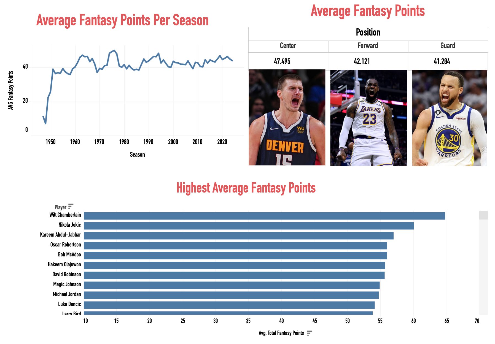
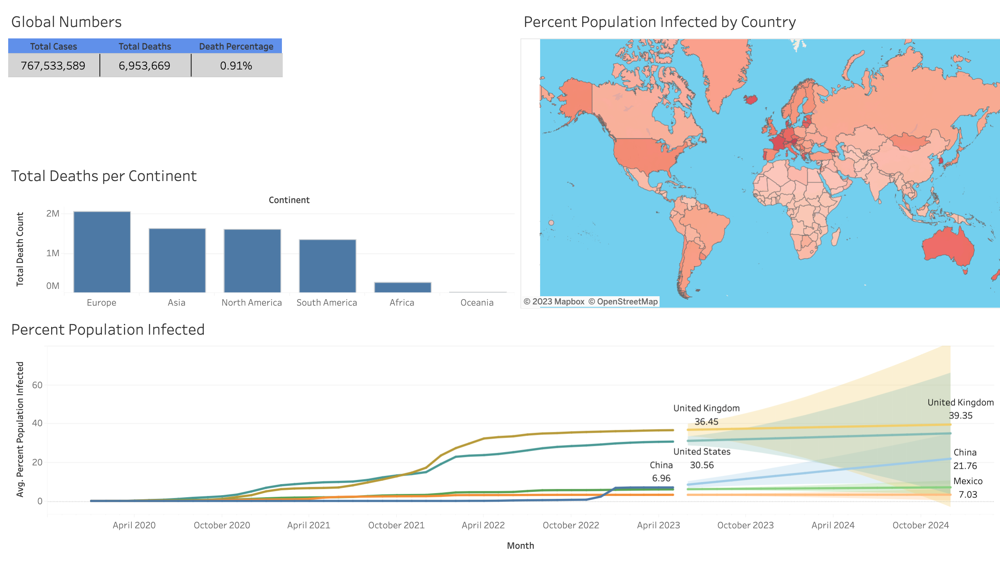
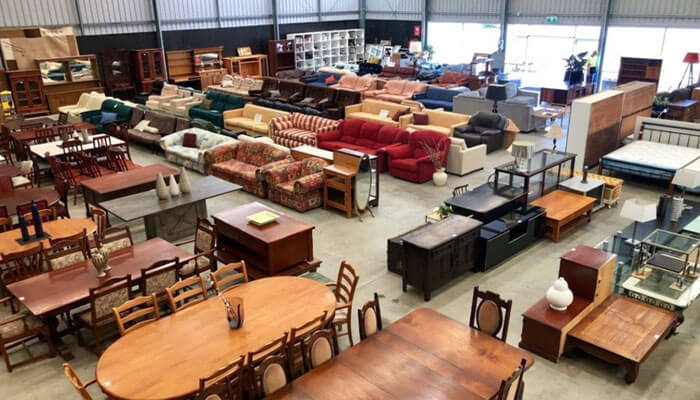

Leveraging SQL, Excel, and Tableau, I transformed data from the top 1000 NBA player seasons, uploading them into a database for comprehensive analysis. The dashboard interprets raw player stats into a personalized fantasy points system. Navigate seamlessly through different eras with intuitive filters for active/inactive players, teams, and seasons. Rigorous Excel cleaning ensures data accuracy, while Tableau brings the dashboard to life with visually captivating insights. Explore average fantasy points by season, player, and position interactively.
In this data cleaning project, I utilized SQL queries to standardize date formats, fill missing addresses, split address fields, convert binary values, and remove duplicates from a fictional Nashville real estate dataset. The refined dataset is now primed for further analysis, enabling data-driven insights and informed decision-making in the Nashville housing market.

In this data exploration project, I utilized SQL queries to analyze global COVID-19 data. Developed insights regarding global and regional trends, including death percentages, infection rates, highest infection countries, and the relationship between population and vaccinations. Views were created to store important data for future visualizations and analysis.

Tableau Portfolio that displays the dashboards and visualizations I have created.

In this data analysis project, I used R code to analyze bike-sharing data. I combined multiple quarters of bike-sharing data into a single dataframe and analyzed the differences in bike usage between members and casual riders. Data wrangling techniques were applied to clean and organize the data, including column renaming, stacking dataframes, adding date attributes, calculating ride length, and removing irrelevant entries.

In this data exploration project, I used pandas, Python's Data Analysis Library, to analyze sales data. The project involved grouping the data by sub-category and performing calculations to determine the total profits and sales for each sub-category. Furthermore, the analysis focused on bookcases, specifically, examining discounts, profits, and sales across different regions, segments, states, and time periods.